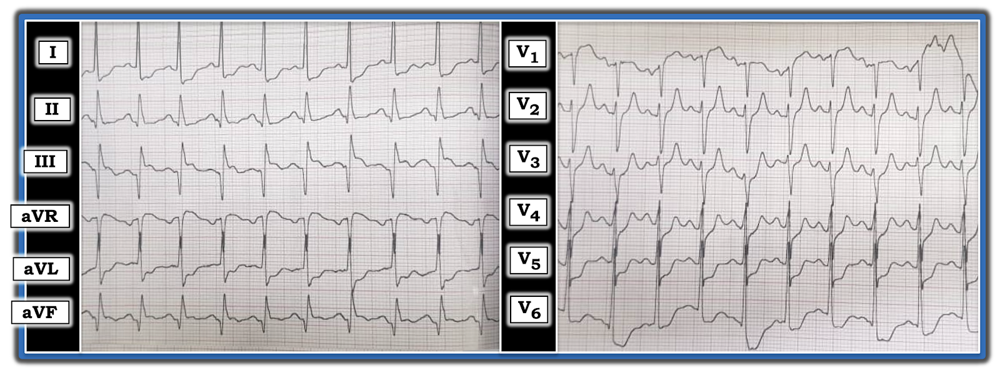
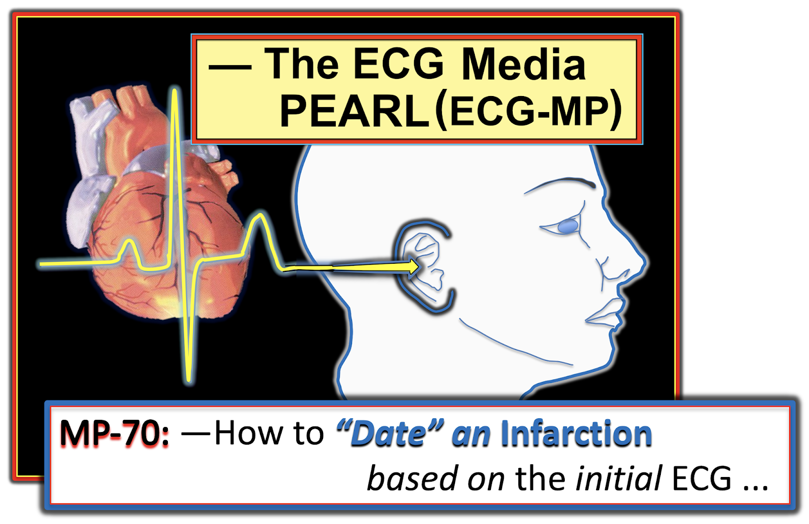
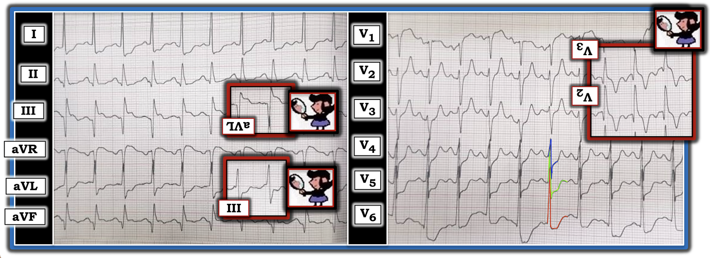

ECG Blog #258 (70) — Làm sao "định tuổi" một nhồi máu cơ tim?
Điện tâm đồ trong Hình-1 được ghi từ một bệnh nhân lớn tuổi đã biết có bệnh mạch vành, đến khám vì đau ngực ngày càng nặng trong 10 giờ.
- Với bệnh sử trên — BẠN sẽ đọc bản ghi này như thế nào?
- Có nên kích hoạt phòng thông tim (cath lab) không?
- Điểm cộng: Bạn có thể hình dung ra một "câu chuyện" lâm sàng để giải thích tất cả các dấu hiệu trên điện tâm đồ không?


=======================================
LƯU Ý: Đến đây, một số bạn đọc có thể muốn nghe ECG Audio PEARL dài 10:20 phút trước khi đọc Suy nghĩ của tôi về điện tâm đồ trong Hình-1. Bạn có thể xem Suy nghĩ của tôi về bản ghi này bất cứ lúc nào (nằm bên dưới ECG MP-70).
=======================================


Hôm nay, ECG Media PEARL #70 (10:20 phút Audio) — Ôn lại CÁCH "định tuổi" một nhồi máu dựa trên điện tâm đồ ban đầu.
Suy nghĩ tuần tự CỦA TÔI về điện tâm đồ trong Hình-1:
Như thường lệ — tôi ưu tiên dùng Cách tiếp cận hệ thống (mà tôi ôn lại trong ECG Blog #205). Dùng cách tiếp cận hệ thống đặc biệt quan trọng trong ca hôm nay — vì có nhiều bất thường sóng ST-T mà nếu không thì rất dễ bỏ sót.
- Tần số & Nhịp: Tần số tim nhanh. Sóng P dương ở chuyển đạo II, khoảng PR cố định và bình thường — nên nhịp trong Hình-1 là nhịp nhanh xoang tần số ~120-125/phút.
- Các khoảng (PR/QRS/QTc): Khoảng PR bình thường — phức bộ QRS hẹp — và QTc có thể hơi kéo dài (dù khó đánh giá khoảng QTc khi tần số tim nhanh hơn 90-100/phút).
- Trục: Trục QRS mặt phẳng trán bình thường (tôi ước khoảng +20 độ — vì phần dương thực của QRS ở chuyển đạo I hơi lớn hơn ở chuyển đạo II, còn QRS ở chuyển đạo III gần như đẳng điện).
- Lớn các buồng tim: Không có xung chuẩn (standardization mark) — nên cách tốt nhất là giả định chuẩn bình thường. Dù chuẩn thế nào — tôi nghi ngờ có LVH (phì đại thất trái — Left Ventricular Hypertrophy) — dựa vào sóng R cao ở chuyển đạo I (bị cắt cụt — nhưng có vẻ ít nhất 15 mm) — và nhất là sóng R rất cao ở chuyển đạo V6 (ít nhất 20 mm — dù như thấy trong Hình-2, khó đo chính xác vì chồng lấn với QRS ở chuyển đạo V4 và V5) — Xem ECG Blog #245 để biết chi tiết về tiêu chuẩn LVH.
Về Thay đổi Q-R-S-T:
- Q (sóng Q) — Có sóng Q rất lớn ở 2 trong 3 chuyển đạo dưới (tức ở chuyển đạo III và aVF) — và một sóng Q nhỏ hơn-nhưng-chắc chắn-có ở chuyển đạo dưới thứ 3 ( = chuyển đạo II). T
- R (tăng tiến sóng R) — Vùng chuyển tiếp (nơi sóng R trở nên cao hơn độ sâu của sóng S) ở vị trí phù hợp, nằm giữa chuyển đạo V3 và V4. Có thể có một lỗi nhỏ khi đặt điện cực ngực V2 (vì cả sóng R lẫn sóng S ở chuyển đạo này đều lớn hơn sóng R và S ở cả hai chuyển đạo kế bên = V1 và V3, mà bình thường thì không như vậy). Dù vậy — kể cả nếu có, lỗi đặt điện cực nhỏ này cũng không làm thay đổi nhận định tổng thể về bản ghi này.
- ST (thay đổi sóng ST-T) — Có ST chênh lên đáng kể dạng vòm (coving) ở chuyển đạo III. Có ST chênh lên bất thường mức độ ít hơn (với hình dạng tương tự) ở chuyển đạo aVF. Tuy nhiên, không có ST chênh lên ở chuyển đạo dưới thứ 3 (tức chuyển đạo II). Có ST chênh lên 1-2 mm ở chuyển đạo aVR.
- T (sóng T) bất ngờ cao và nhọn ở chuyển đạo V2 và V3, và ở mức độ ít hơn ở chuyển đạo V4. Khác với tăng kali máu — không có sóng T nhọn ở bất kỳ chuyển đạo nào trong 9 chuyển đạo còn lại của bản ghi này.
- Có ST chênh xuống rõ rệt ở 5 trong số các chuyển đạo còn lại (tức ở chuyển đạo I, aVL; V4, V5,V6).


Tổng Hợp Lại Toàn bộ: Có rất nhiều điều đang diễn ra trong ca này. Dù tôi không có thông tin theo dõi của bệnh nhân này — tôi vẫn thấy đáng để phân tích kịch bản lâm sàng mà tôi cho là hợp lý nhất — vì tôi tin rằng Bệnh sử ngắn gọn được cung cấp và điện tâm đồ duy nhất này thực sự kể một Câu chuyện. ĐIỀU CỐT LÕI — Tôi cho rằng điện tâm đồ trong Hình-1 gợi ý mạnh mẽ đã có một STEMI mới xảy ra (nếu không muốn nói là vẫn đang diễn tiến cấp) vùng dưới-sau ( = ST Elevation Myocardial Infarction — nhồi máu cơ tim ST chênh lên). Tôi xin bổ sung các suy nghĩ sau:
- Bệnh sử được cung cấp (cụ thể là bệnh nhân lớn tuổi, đã biết có bệnh mạch vành — đến khám vì đau ngực ngày càng nặng trong 10 giờ) — là thiết yếu để đánh giá và ra quyết định lâm sàng tối ưu.
- Với bệnh sử này và điện tâm đồ của bệnh nhân — không còn nghi ngờ gì rằng nhồi máu thành dưới đã xảy ra vào một thời điểm nào đó. Sóng Q lớn thấy ở cả 3 chuyển đạo dưới (nhất là chuyển đạo III và aVF). Dù vậy — thách thức lâm sàng là xác định "Chuyện gì đã xảy ra vào lúc nào?" — và — có nên kích hoạt phòng thông tim ngay lập tức hay không?
- Điều đáng lo rõ ràng là tần số nhanh bất ngờ của nhịp nhanh xoang (tức khoảng 120-125/phút) ở bệnh nhân này. Nhồi máu không biến chứng thường không gây ra nhịp nhanh đến mức này — điều này làm dấy lên lo ngại bệnh nhân có thể đang mất bù (tức có lẽ đang suy tim nặng? — và/hoặc có một vấn đề khác cần xử trí ngay).
Vậy LÀM SAO chúng ta có thể “định tuổi” nhồi máu thành dưới của bệnh nhân này? "Định tuổi" một nhồi máu là việc khó! Tôi bàn về câu hỏi này trong Audio Pearl #70 ở trên. Trên bản ghi này có những bằng chứng mâu thuẫn nhau về "tuổi" của nhồi máu.
- Sóng Q rất lớn ở chuyển đạo III và aVF nghiêng về nhồi máu cũ. Dù vậy — vẫn có thể bệnh nhân lớn tuổi đã biết có bệnh mạch vành này từng bị nhồi máu thành dưới trước đây — và nay đang bị tái nhồi máu cấp thành dưới. ĐIỂM THEN CHỐT (PEARL): Đôi khi, sóng Q có ý nghĩa đã được ghi nhận hình thành chỉ trong vòng 1-2 giờ. DO ĐÓ: Chúng ta không thể loại trừ khả năng một nhồi máu rất mới, hoặc thậm chí cấp tính đang diễn tiến chỉ dựa vào kích thước lớn của các sóng Q thành dưới này.
- Có ST chênh lên dạng vòm ở chuyển đạo III — và ở mức độ ít hơn ở chuyển đạo aVF. Ngoài ra — có ST chênh xuống rõ rệt ở không dưới 5 chuyển đạo (tức chuyển đạo I, aVL; V4, V5 và V6). ST chênh xuống này rõ ràng nặng hơn và có "hình dạng" khác so với dự kiến nếu chỉ do LVH có "tăng gánh" (strain). Vì vậy tôi diễn giải đây là ST chênh xuống soi gương và/hoặc do thiếu máu cục bộ từ một biến cố mạch vành cấp (có thể đang diễn tiến) cho đến khi chứng minh được điều ngược lại.
- Củng cố thêm cho một biến cố tim mới xảy ra (nếu không muốn nói là cấp tính) — là mối quan hệ đối nghịch dạng soi gương "kỳ diệu" của sóng ST-T ở chuyển đạo III và aVL. Như đã bàn trong ECG Blog #184 và được minh hoạ bằng các ô chèn "nghiệm pháp soi gương" tôi thêm cho chuyển đạo III và aVL trong Hình-2 — hình soi gương của sóng ST-T chênh xuống ở chuyển đạo aVL trông giống hệt ST chênh lên ở chuyển đạo III. Tương tự — hình soi gương của sóng ST-T chênh lên ở chuyển đạo III trông giống hệt hình dạng ST chênh xuống ở chuyển đạo aVL.
- Dù vậy — điều chống lại việc nhồi máu thành dưới là cấp tính là mức ST chênh lên ở chuyển đạo aVF chỉ ở mức tối thiểu — và hoàn toàn không có ST chênh lên ở chuyển đạo II. Với mức độ ST chênh xuống ở nhiều chuyển đạo trên bản ghi này — tôi sẽ kỳ vọng thấy ST chênh lên rõ ràng với mức độ tương đương ở các chuyển đạo dưới NẾU nhồi máu là cấp tính.
- Một dấu hiệu nổi bật là sóng T nhọn thấy ở chuyển đạo V2 và V3. Chúng ta thấy sóng T nhọn rõ rệt bất ngờ này tiếp diễn (sau đoạn ST chênh xuống) ở chuyển đạo V4. Đây không phải là sóng T nhọn của tăng kali máu — vì nó chỉ có ở 3 chuyển đạo này (và chúng ta sẽ kỳ vọng sóng T nhọn lan toả hơn nếu có tăng kali máu). Thay vào đó — tôi cho rằng lời giải thích hợp lý nhất được minh hoạ bằng các ô chèn "nghiệm pháp soi gương" thêm vào Hình-2 cho chuyển đạo V2 và V3 — gợi ý rằng hình soi gương của các sóng T nhọn ở chuyển đạo V2, V3, V4 nhiều khả năng đại diện cho sóng T tái tưới máu đảo ngược sâu từ nhồi máu thành sau mới xảy ra (khái niệm này được ôn thêm trong ECG Blog #193).
- Cuối cùng — còn lại ST chênh lên ở chuyển đạo aVR — điều này, cùng với ST chênh xuống rõ rệt ở 5 trong số các chuyển đạo còn lại (tức chuyển đạo I, aVL; V4,5,6) — làm dấy lên lo ngại về thiếu máu cục bộ dưới nội tâm mạc lan toả do bệnh mạch vành đáng kể ở các vùng giải phẫu khác.
TỔNG HỢP của tôi (Giải thích tất cả các dấu hiệu điện tâm đồ trong ca hôm nay):
Các dấu hiệu điện tâm đồ trong ca hôm nay không thể giải thích bằng một biến cố cấp đơn lẻ. Thay vào đó — tôi nghĩ rằng:
- Bệnh nhân này đã bị một STEMI dưới-sau lớn, mới xảy ra. Mức ST chênh lên hạn chế ở các chuyển đạo dưới — cùng với sóng T ở các chuyển đạo trước cao, nhọn bất ngờ gợi ý đã có một mức độ tái tưới máu tự phát (và nhồi máu đã xảy ra ít nhất nhiều giờ trước — điều này phù hợp với bệnh sử cho biết đau ngực đã kéo dài 10 giờ).
- Bệnh nhân này nhiều khả năng có bệnh mạch vành nhiều nhánh — với ST chênh xuống rõ rệt ở nhiều chuyển đạo có thể đại diện cho thiếu máu cục bộ ở các vùng giải phẫu khác (và có thể làm giảm bớt mức ST chênh lên lẽ ra đã thấy được).
- Có LVH — nhưng hình dạng và mức ST chênh xuống ở các chuyển đạo bên thể hiện nhiều hơn chỉ là "tăng gánh" thất trái.
- Nhịp nhanh xoang rõ rệt (~120-125/phút) — cùng với các dấu hiệu điện tâm đồ nêu trên và đau ngực kéo dài (nặng dần trong 10 giờ) — là chỉ định rõ ràng để kích hoạt phòng thông tim! Dù có bằng chứng điện tâm đồ về tái tưới máu — những gì vừa mở lại có thể đóng lại lần nữa — và — nhịp nhanh xoang rõ rệt + ST chênh xuống rõ rệt ở nhiều chuyển đạo + đau ngực kéo dài và nặng dần — tất cả đều ủng hộ việc nhanh chóng xác định giải phẫu mạch vành để quyết định XEM có cần PCI cấp (can thiệp mạch vành qua da — Percutaneous Coronary Intervention) hay không.
==============================
PHẦN BỔ SUNG (28/10/2021) — Có những yếu tố của ca này rất giống Hình ảnh Aslanger (Hình ảnh này được Dr. Smith mô tả rất hay trong bài đăng ngày 4 tháng 1 năm 2021 của ông). Tiền đề của Aslanger — là NẾU có MI thành dưới + thiếu máu cục bộ dưới nội tâm mạc lan toả — thì vector ST chênh lên sẽ dịch chuyển sang phải. Điều này dẫn đến:
- ST chênh lên ở chuyển đạo III (do MI thành dưới cấp) — nhưng không ở các chuyển đạo dưới khác (II, aVF) do vector ST chênh lên dịch chuyển sang phải.
- ST chênh xuống ở một hoặc nhiều chuyển đạo ngực bên (V4, V5, V6) với sóng T dương hoặc dương ở phần cuối — nhưng không có ST chênh xuống ở chuyển đạo V2. (ST chênh xuống rõ rệt do bệnh mạch vành nhiều nhánh làm giảm bớt mức ST chênh lên lẽ ra đã có ở chuyển đạo II và aVF).
- ST chênh lên ở chuyển đạo V1 nhiều hơn bất kỳ mức ST chênh lên nào ở chuyển đạo V2.
- Có thể có ST chênh xuống soi gương ở chuyển đạo I nhiều hơn ở chuyển đạo aVL (do vector ST dịch chuyển sang phải).
- Các chuyển đạo duy nhất có ST chênh lên đáng kể có thể là chuyển đạo III, aVR và V1 (phản ánh MI thành dưới + thiếu máu cục bộ dưới nội tâm mạc do bệnh mạch vành lan toả).
Dù đã nói như trên — các đặc điểm bổ sung cần cân nhắc trong ca hôm nay gồm: i) Còn có LVH rõ rệt; và, ii) MI dưới-sau có lẽ đã xảy ra ít nhất 10 giờ, và nay đang cho thấy sóng T tái tưới máu nổi bật ở vùng phân bố thành sau (tức sóng T ở các chuyển đạo trước cao, nhọn).
==============================
Lời cảm ơn: Xin cảm ơn Ahmad Separham (từ Tabriz, Iran) đã chia sẻ ca bệnh và bản ghi này.
==================================
Các bài ECG Blog Liên quan đến ca hôm nay:
- ECG Blog #205 — Ôn lại Cách tiếp cận hệ thống của tôi trong đọc điện tâm đồ 12 chuyển đạo.
- ECG Blog #245 — Trình bày "Quan điểm của tôi" về một cách tiếp cận dễ áp dụng để chẩn đoán LVH (bao gồm những CẢNH BÁO có thể gây khó khăn khi đánh giá thiếu máu cục bộ cấp đi kèm) trên điện tâm đồ.
- ECG Blog #142 — Trình bày một ca khác để bàn về cách "định tuổi" một nhồi máu.
- ECG Blog #193 — minh hoạ cách dùng Nghiệm pháp soi gương giúp nhận ra MI thành sau cấp. Bài này ôn lại những điều cơ bản để dự đoán "động mạch thủ phạm". LƯU Ý: Hình-5 trong Phần bổ sung của bài này minh hoạ các điểm thiết yếu để nhận diện MI thành sau đơn độc.
- ECG Blog #184 — minh hoạ mối quan hệ đối nghịch dạng soi gương "kỳ diệu" khi có thiếu máu cục bộ cấp giữa chuyển đạo III và chuyển đạo aVL (được trình bày trong Audio Pearl #2 của bài này).
- Bài đăng ngày 21 tháng 9 năm 2020 trên Dr. Smith's ECG Blog — Bình luận của tôi (ở cuối trang) nhấn mạnh tính hữu ích của Nghiệm pháp soi gương trong chẩn đoán MI thành sau cấp.
- Bài đăng ngày 16 tháng 2 năm 2019 trên Dr. Smith's ECG Blog — Bình luận của tôi (ở cuối trang) nhấn mạnh tính hữu ích của Nghiệm pháp soi gương trong chẩn đoán MI thành sau cấp.
- ECG Blog #80 — ôn lại cách dự đoán động mạch "thủ phạm" (và đưa ra một ca khác minh hoạ Nghiệm pháp soi gương trong chẩn đoán MI thành sau cấp).